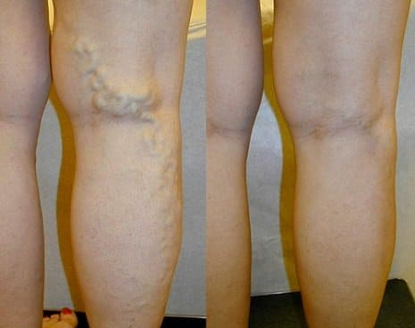
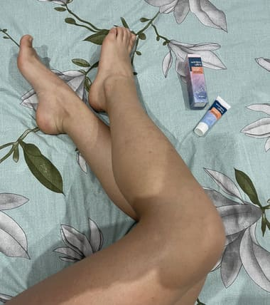
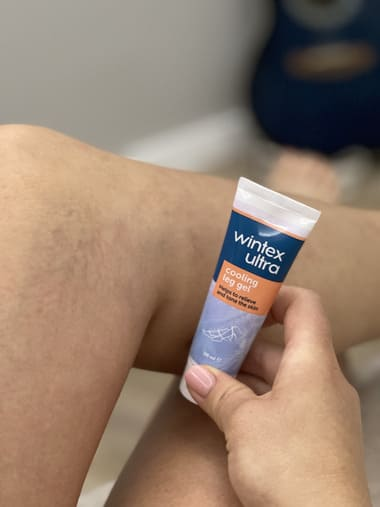

TERAPIA VARICELOR CU MIJLOCE SCUMPE: SPECIALIȘTII ÎN DOMENIUL FLEBOLOGIEI ÎNȘEALĂ CLIENȚII DIN TOATĂ ȚARA DEJA DE 12 ANI!
Dacă aveți vene varicoase, mai jos veți găsi recomandările unui specialist bine-cunoscut cum să scăpați de ei foarte ieftin!
Nu vă lăsați conduși de specialiști frauduloși care încearcă să vă prescrie cel mai scump și ineficient remediu.

De la redacție: La sfârșitul anului, detențiile în masă ale specialiștilor au început în multe orașe ale țării noastre. În total, potrivit agențiilor de aplicare a legii, 567 de specialiști au fost arestați timp de 3 luni. Printre deținuți se numără atât specialiști obișnuiți, cât și șefi de departamente flebologice, precum și etc.
Motivul reținerilor, exprimat de agențiile de aplicare a legii, este șocant. De 12 ani, specialiștii în domeniul flebologiei înșeală oamenii prescriindu-le remedii inutile și costisitoare. Această practică s-a răspândit în întreaga țară. În total, potrivit anchetei, peste 1 milion de persoane au fost înșelați de specialiști pentru o sumă care depășește 30 de miliarde, dar cel mai rău lucru este că mulți dintre persoane cărora li s-au prescris aceste produse scumpe au devenit în cele din urmă invalizi sau au murit.
Varicele sunt unul dintre liderii mortalității în rândul tuturor bolilor vasculare.
Consider că varicele sunt o boală extrem de periculoasă, care în prezent este unul dintre liderii mortalității în rândul tuturor problemelor vasculare din țară. Toată lumea vorbește despre cancer și oncologie, dar să recunoaștem: cancerul apare la 3-4% dintre oameni, iar fiecare a doua persoană are varice după 40-45 de ani. 8 din 10 persoane care suferă de vene varicoase așteaptă amputarea și dizabilitatea!
L-am rugat pe specialiștul principal al țării, Dr. Augustin Dima, să comenteze situația. Dr. Augustin Dima - este unul dintre cei care au cerut în mod repetat Procuraturii să efectueze un control în masă al specialiștilor în domeniul flebologiei.
Întrebările dvs. sunt răspunsate de: Dr. Augustin Dima. Expert în domeniul chirurgiei și flebologiei, academician al Academiei de Științe Medicinale. Peste 20 de lucrări științifice despre flebologie și chirurgie vasculară. Executor responsabil a 11 contracte în cadrul programului țintă "România sănătoasă", executor al proiectelor INTAS pentru terapia și prevenirea bolilor venoase. Practica medicală: mai mult de 40 de ani
Teo Trandafir: Dr. Augustin Dima, Bună ziua! Voi începe cu întrebarea principală, ce se întâmplă?
Dr. Augustin Dima: Se întâmplă ceea ce agențiile noastre de aplicare a legii ar fi trebuit să facă cu mult timp în urmă – să pună toată mafia asta la închisoare. Gândiți-vă doar la aceste cifre - mai mult de 1 milion de vieți calicite în 12 ani! Oamenii, dintre care majoritatea sunt în vârstă de pensionare sau deja sunt pensionari, au apelat la experți pentru ajutor și, în loc să-i ajute, au profitat de suferința oamenilor, știind că fondurile pe care le-au prescris nu vor ajuta. Și această practică a fost răspândită nu numai în clinicile comerciale, ci și, cel mai înspăimântător, în majoritatea clinicilor țării.
Teo Trandafir: Dr. Augustin Dima, despre ce fel de mijloace vorbim?
Dr. Augustin Dima: În principal despre remediile producătorilor străini, pentru care specialiștii de rang superior au primit mită mari și, prin ordin, le-au spus celor inferiori ce anume să prescrie. La rândul lor, au primit bonusuri bune pentru acest lucru.
Reporter: Dar toate aceste mijloace se vând în farmaciile private din întreaga țară?
Dr. Augustin Dima: Da, exact asta e. Cu toate acestea, acest lucru nu înseamnă că ele ajută cu adevărat la vene varicoase. Înţelegeţi, astăzi farmaciile sunt structuri comerciale. De fapt, magazine obișnuite. Ei vând ceea ce se vinde bine și aduce profit, iar acele mijloacele se vând bine din cel puțin două motive care nu depind în niciun fel de eficacitatea lor.
În primul rând, sunt recomandate de specialiști corupți. Li se recomandă să le prescrie chiar și celor incoruptibili la diferite conferințe, care, de regulă, sunt sponsorizate de producătorii acestor mijloace. Acum totul se vânde peste tot și se desfășoară publicitate agresivă. Acei specialiști care nu se adâncesc cu adevărat în ce remedii ajută bine, recomandă ceea ce prescriu alții și ceea ce este promovat activ.
În al doilea rând, aceste mijloace nu au practic concurenți. Adică, de fapt, oamenii nu au cu ce altceva să ia terapie. Și nu pentru că nu există remedii eficiente în principiu, ele există, pur și simplu nu sunt vândute în farmacii private, deoarece pur și simplu nu sunt permise în aceste farmacii private.
Farmaciile private a orașului sunt literalmente înfundate cu mijloace inutile, iar produsele cu adevărat eficiente pentru varice pur și simplu nu se găsesc!
Întrebați-vă - cunoașteți astfel de oameni care ar putea scăpa de vene varicoase cu mijloace de la farmacii private? Poate cunoscuții sau prietenii tăi? Nu există astfel de oameni!
Aș dori, de asemenea, să explic de ce aceste mijloace nu ajută, astfel încât să înțelegeți pe deplin complexitatea situației. Vedeți, este pur și simplu neprofitabil pentru producătorii acestor "mijloace" ca oamenii să scape complet de varice. Este mult mai profitabil să vinzi acele produse care ajută doar o vreme – atunci oamenii vor veni din nou pentru ele.
Teo Trandafir: De ce nu face nimeni nimic în acest sens? La urma urmei, aceasta este haos...
Dr. Augustin Dima: Da, este nelegiuire, dar, din fericire, s-a terminat. Am avertizat în mod repetat specialiștii în domeniul flebologiei despre încălcări, dar nu ne-au luat în serios cuvintele. La urma urmei, este foarte dificil să refuzi banii și nivelul de trai pe care producătorii produselor fictive le-au oferit pentru "promovarea" lor. Acum sunt în desfășurare detenții, inclusiv specialiștii cunoscuți. Din păcate, nu avem efect de pârghie asupra farmaciilor, dar această problemă este, de asemenea, elaborată activ la nivel legislativ. Foarte curând va exista o lege conform căreia farmaciile private vor fi obligate să coordoneze lista remediilor vândute. Nu există așa ceva acum.
Teo Trandafir: Dr. Augustin Dima, ați spus că, în ciuda faptului că mijloacele inutile sunt vândute în farmacii private, există și cele care ajută cu adevărat la combterea varicelor. Puteți numi cel puțin un astfel de remediu?
Dr. Augustin Dima: Da, desigur. De exemplu, un remediu foarte bun care vă permite să restaurați chiar și vene varicoase avansate este "", dezvoltat în anul Institutului de cercetare a flebologiei. Deoarece acest produs este intern, iar Institutul de cercetare în sine nu este angajat în activități comerciale, costă foarte ieftin, în comparație cu cele prezentate în farmacii private și într-adevăr ajută!
Teo Trandafir: Puteți da exemple concrete de terapie al venelor varicoase cu acest produs?
Dr. Augustin Dima: Da, desigur. Vă pot spune sute de cazuri, dar poate mă voi concentra pe cele care demonstrează cel mai mult toate beneficiile terapiei cu acest produs:
Femeie, 54 de ani. Venele s-au recuperat în totalitate. Durata cursului - 5 săptămâni.
Terapia varicelor la femeie, 44 de ani. Durerile chinuitoare care au însoțit persoana timp de 2 ani au dispărut complet. Venele s-au restaurat.
Terapia venelor varicoase. Femeie, 62 de ani. Termenul de utilizare a produsului "a" - 1 lună. Venele s-au recuperat în totalitate.
Fotografiile arată clar că "" nu numai că ameliorează simptomele, dar declanșează și regenerarea venelor varicoase. Ca urmare, venele sunt complet restaurate.
Conform rezultatelor studiilor clinice, precum și a practicii de utilizare, "" este considerat principalul în terapia varicelor. Și cel mai minunat lucru este că poate fi utilizat acasă. La urma urmei, o mulțime de oameni nu vor să meargă la specialiști. Și ei pot fi înțeleşi în acest sens, mai ales în lumina evenimentelor recente. "" ajută la scăderea venelor varicoase pe cont propriu.
Teo Trandafir: "" este un gel sau pastile?
Cătălin Marinescu: Acesta este o cremă-gel complex special care oprește dezvoltarea varicelor și restabilește venele datorită unei formule speciale. "" este o dezvoltare patentată unică a oamenilor noștri de știință. Nu mai există astfel de remedii nicăieri în lume.
În plus, nu este un produs chimic, ci un produs complet natural care exclude o reacție alergică și alte probleme care apar în timpul terapiei, care, de asemenea, împovărează organismul, forțându-l să proceseze o mulțime de compuși chimici diferiți.
Teo Trandafir: Dr. Augustin Dima, dacă "" nu este vândut în farmacii private, cum îl pot obține?
Dr. Augustin Dima: Totul este foarte simplu, puteți obține "", contactând Institutul de cercetare a flebologiei prin formularul de mai jos, produsul participă periodic la diferite programe preferențiale, ceea ce îl face cu adevărat social.
De exemplu, acum "" participă la un program special "România fără vene varicoase", conform căruia poate fi cumpărat cu reducere. Probabil veți fi surprinși, dar produsul poate fi cumpărat cu reducere! Vă recomandăm acum să comparați cu prețurile acelor mijloace care sunt prezentate pe rafturile farmaciilor private.
"" ajută chiar și în cele mai avansate cazuri de vene varicoase, motiv pentru care este recomandat chiar și persoanelor cu o formă severă a bolii. Poate fi folosit și pentru prevenire.
Dr. Augustin Dima: Vreau să împărtășesc rezultatele studiilor clinice după terminarea cursului cu produsul "". Au surprins plăcut mulți specialiști. Pentru acele persoane care au vene varicoase avansate, va fi o adevărată mântuire.
-
Dispariția durerii - 99%
-
Reducerea edemului piciorului - 98%
-
Reducerea greutății și disconfortului la nivelul picioarelor - 99%
-
Absența telangiectaziei - 98%
-
Eliminarea nodurilor varicoase - 93%
-
Eliminarea hiperpigmentării - 96%
2. Nu au fost detectate efecte secundare nedorite, inclusiv reacții alergice.
3. "" este recunoscut ca fiind principalul produs în lupta împotriva venelor varicoase.
Pe lângă țara nostră, produsul a fost certificat în Europa la Universitatea de Flebologie și Hematologie din Paris. Studiile clinice au confirmat pe deplin datele noastre. Francezii au obținut un procent și mai mare de recuperare. Țările europene manifestă un interes foarte mare pentru produs. Toate testele fără excepție au arătat că produsul are un nivel extrem de ridicat de eficacitate.
Teo Trandafir: Cred că cititorii noștri vor fi interesați să audă cum să cumpere "" în cadrul programului special?
Catalina Marinescu: Programul funcționează în prezent numai în unele regiuni ale României. În mod critic, nu sunt suficiente volume de producție pentru a acoperi întreaga țară în ansamblu. Pe măsură ce lotul de produs pregătit pentru o anumită regiune se încheie, acesta se "oprește" și așteaptă următoarea întoarcere.
Produsul "" poate fi achiziționat la o reducere de până la50%.
ATENȚIE: Din cauza cererii fără precedent pentru " ", cantitatea mărfurilor este strict limitată. Pentru a oferi tuturor clienților șanse egale de reducere de până la 50% la promoție, se organizează o extragere.
- Mai jos veți vedea 3 uși – selectați una și faceți clic pe ea.
- Obțineți reducerea – va apărea pe ecran.
- După aceea, pe ecran va apărea un simplu formular de cerere – introduceți numele și numărul de telefon.
- Un consultant vă va suna înapoi în câteva minute, vă va răspunde la întrebări și va specifica adresa de livrare.
Teo Trandafir: Dr. Augustin Dima, poate doriți să spuneți ceva cititorilor noștri înainte de a termina interviul?
Dr. Augustin Dima: Singurul lucru pe care vreau să-l spun este să nu vă grăbiți să muriți devreme, să aveți grijă de sănătatea ta. Puteți nici să nu bănuiți că aveți vene varicoase. Ele se încep destul de imperceptibil: greutatea și oboseala în picioare apar rapid, umflarea apare după efort, apare o rețea vasculară și această listă poate fi continuată. Drept urmare, nici nu veți observa cum aveți numeroase probleme de sănătate. Aceasta este dacă nu vorbim despre masa deceselor subite, care sunt de obicei asociate cu dezvoltarea trombozei. Nu așteptați până când este prea târziu! Începeți prevenirea sau terapia chiar acum. Din partea noastră, am făcut absolut totul pentru ca toată lumea să o poată face.
Important: S-a ajuns la concluzia că și - cel mai bun moment pentru a începe lupta cu varice. Datorită normalizării temperaturii medii, metabolismul accelerează, efectul utilizării produsului crește. Dizolvarea cheagurilor de sânge are loc cu 47% mai repede decât s-ar întâmpla în orice altă perioadă a anului. Curățarea venelor se accelerează cu 100% pe parcursul întregului curs de aplicare.
ADĂUGAT În legătură cu numărul mare de comenzi, am fost nevoiți să limităm condițiile promoției.
Atenție! Promoția este pentru toți locuitorii țării. Puteți rezerva "" cu o reducere de până la 50% astăzi înainte de inclusiv!



Cu respect, Catalin Marinaru





Și pachetul a ajuns foarte repede.
Cu respect, Catalin Marinaru
Cu respect, Catalin Marinaru


Ei chiar dau o reducere acolo, grăbiți-vă!
M-au sunat foarte repede și au confirmat comandat. Nu mai pot fi timid de picioarele mele.


Cu respect, Catalin Marinaru

Cu respect, Catalin Marinaru

Și vă rugăm să vă feriţi de falsuri.
Cu respect, Catalin Marinaru
